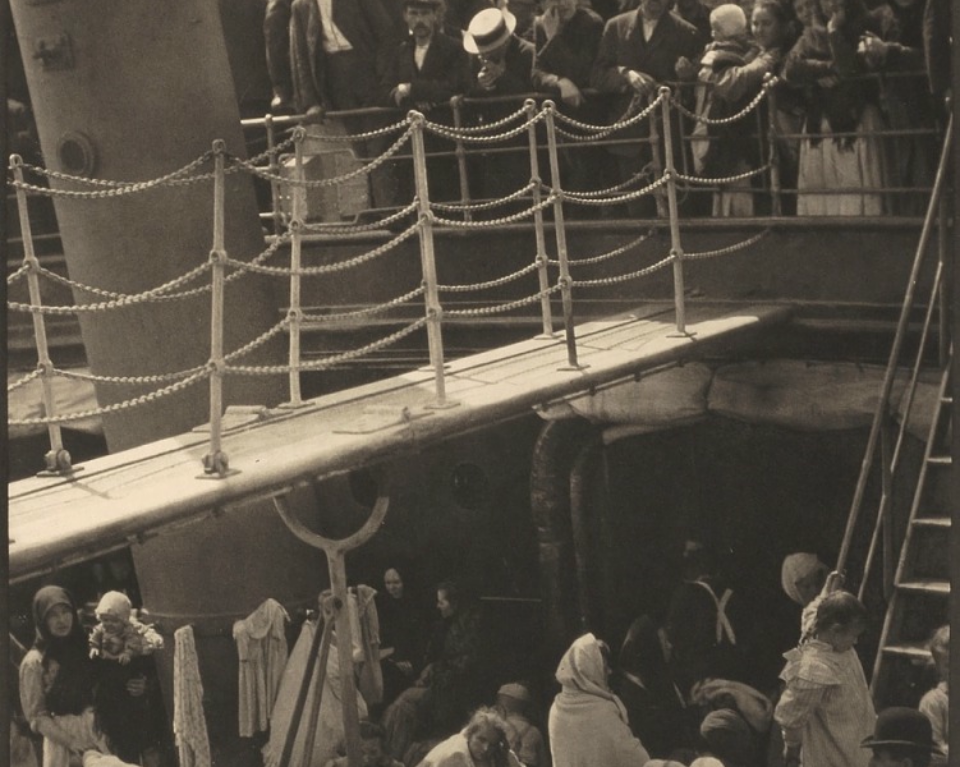
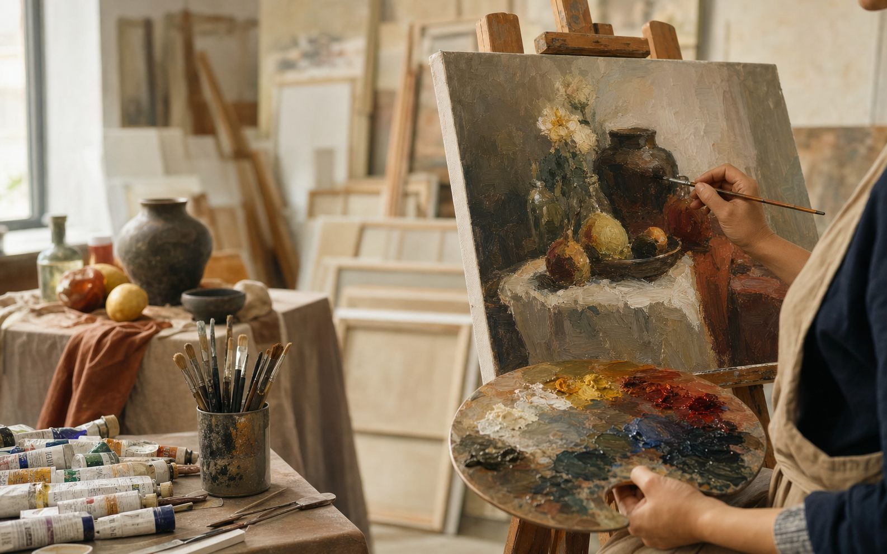
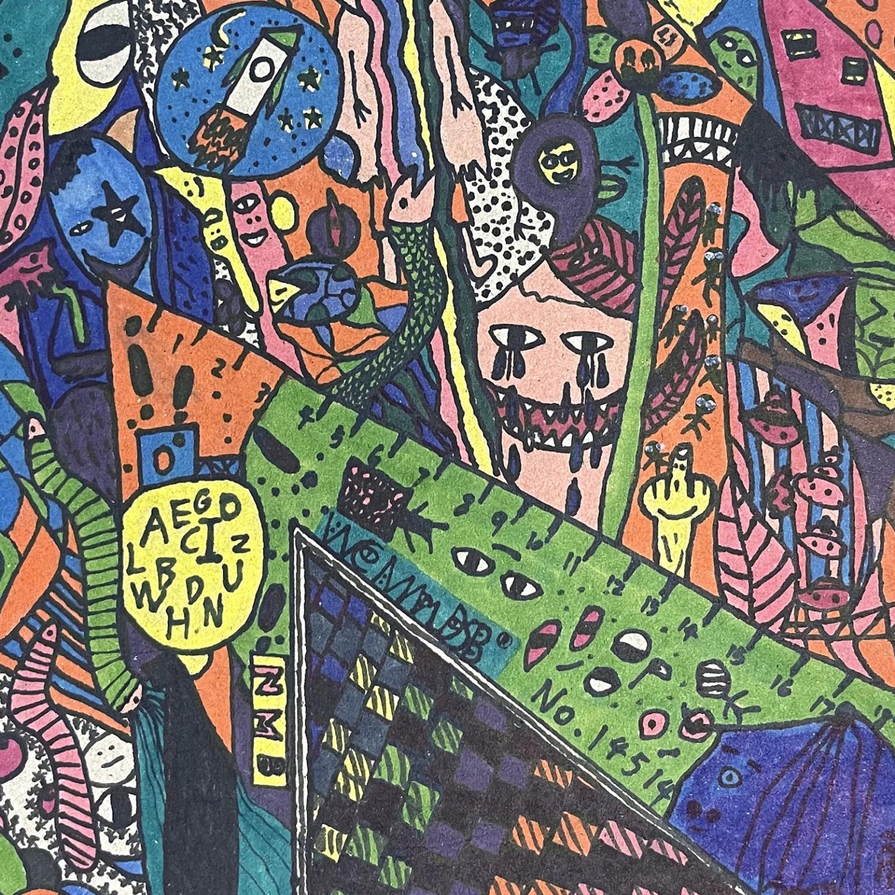
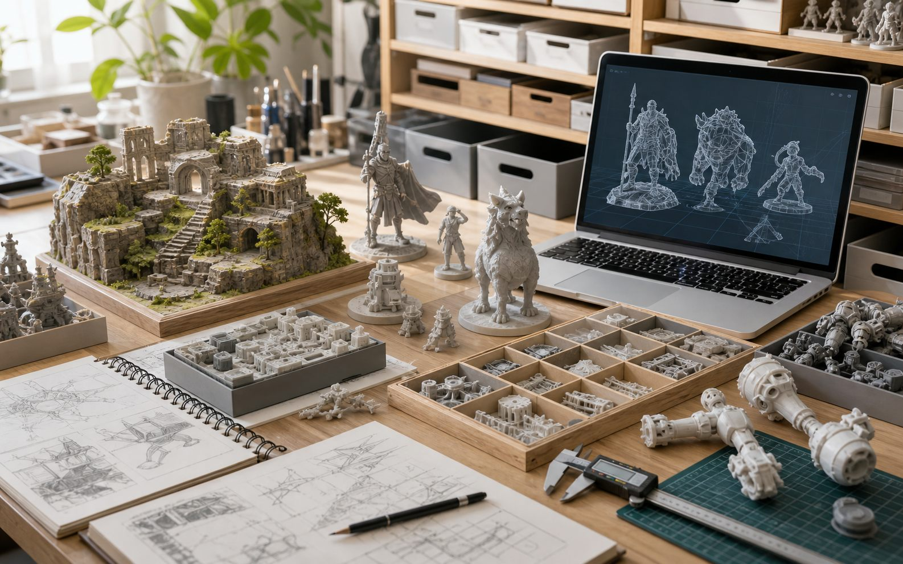

OUART Studio
以绘画为起点，陪伴儿童与成人建立长期创作能力。
初艺 OUART 专注成人油画、少儿综合美术与模型场景制作，用清晰的课程结构、 真实的作品展示和持续整理的资料库，支持不同阶段的艺术学习与创作实践。

用扬·利文斯《书籍静物》练习深色静物里的大暗面归并、前后层次和少量高光
先把书堆和器皿压成稳定的大暗面，再整理遮挡关系，最后只把关键材质提亮，画面会更集中。

用梅斯卡拉《建筑模型》练习建筑体块概括、门洞比例和转折明暗
先稳住整体轮廓，再比较门洞与实墙的关系，最后用简单明暗把小建筑的体积和层次画清楚。

用《勃艮第公爵菲利普墓上的哀悼者》练习披袍人物里的布褶分组、受力方向和暗面概括
先把布料压成几大块垂坠关系，再找收束点和连续大影子，让被遮住的人体也能站稳、走得动。
用《湾流》练习海面里的大斜线构图、波浪分组和主体聚焦
先抓船和海流的整体倾斜趋势，再把浪头压成前中后几组，最后用包围关系把主体稳稳托住。

用《The Steerage》练习多人场景里的对角线分区与黑白秩序
先抓主斜线和上下分层，再把人物压成几组明暗块，让复杂人群先稳定下来，再逐步补充局部。

用《花间双鸟纹盘》练习圆形构图里的疏密节奏
先找回旋主线，再安排花叶和双鸟的穿插位置，用勾线把色块和形体收紧。

用《吊桥》练习重复透视与空间层级
先把桥面、台阶、拱门和亮口分成前中后几层，再用重复元素和明暗聚焦把复杂空间稳稳拉深。

用《受威胁的天鹅》练习 S 形主线与负形观察
先抓脖颈到头部的动作主线，再检查翅膀外缘和空白形，把动物姿态画得更紧、更有爆发力。
用《黄道带》练习竖构图里的装饰节奏
先立主轴，再安排重复曲线和边框收口，让花纹丰富的画面仍然稳、紧、清楚。
用《倒牛奶的女仆》练习单侧窗光下的体积分组
从受光区和背光区的大关系开始，再整理亮部冷暖与边缘松紧，画出安静、结实而不零碎的室内体积。
用《青年库罗斯大理石像》练习正面站姿的重量轴线
从中轴线、承重腿和身体大块面入手，学会把看似对称的人物站姿画得稳而不板。
OUART Studio
从绘画学习到模型制作，初艺把创作过程整理成清晰的学习路径。
课程帮助学习者建立观察、造型、色彩和空间意识；作品集呈现成人与少儿创作成果； 模型分享提供场景、角色、道具等资料索引，方便创作者持续探索。

成人油画与少儿美术课程体系
线上成人油画、线下综合美术、模型场景制作和艺术之旅计划。

学习成果与作品 archive作品集
成人绘画、少儿美术、模型场景作品按系列整理展示。

STL 分享索引模型分享
按日期、专题和关键词整理模型资料，支持搜索与快速查找。
Contact
想学习绘画、咨询少儿课程，或了解模型资料与作品合作，可以直接联系初艺。
成人油画、少儿美术、模型场景制作和浮雕绘画都可以根据学习目标与作品方向进行沟通。 如果你有具体主题、年龄阶段或作品需求，也可以先整理成简短说明。
联系初艺